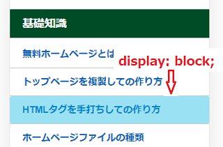
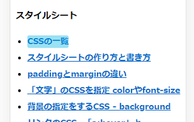
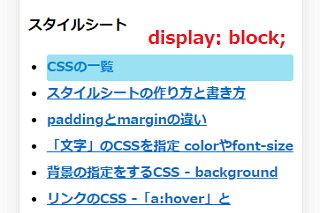
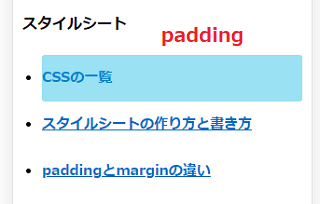

タップ可能な範囲を広げる display:block;
スマホでの閲覧時にメニュー部分をタップしやすくする際、CSSで「display: block;」を指定しておくとタップ可能な範囲が広がるので便利です。
.side a {
display: block;
}

この「display: block;」はインライン要素をブロック要素として表示する際に使用しますが、主にサイドバーなどのリンクに設定することが多いかもしれません。
特に何も設定しない場合、リンクのaタグはインライン要素のため、その文字の狭い範囲しかタップすることができません。

この場合、リンクのaタグに「display: block;」を指定するとブロック要素になるため、その領域の広い範囲をタップできるようになります。

さらに、paddingを設定するとより広い範囲をタップできるようになります。

あとはリストタグのマーカーを非表示にしたり、枠線を付けるなどして調節すれば、このような形に仕上がります。
スマホの場合、ターゲットのサイズを確実に操作できる大きさに設定する必要がありますが、Googleのヘルプページによると、タップ ターゲットのサイズは 「7～10 mm 程度」にするのがおすすめとのことです。
PCサイトの閲覧時については特にクリックしづらいことはないはずですが、大手メディアではPCサイトでも「display: block;」が設定されていることも多いです。ただ、カーソルがすぐに反応してしまうため、コピペしにくくなるデメリットがあるかもしれません。
■<main>タグの「display: block;」
そのほか、HTML5の新しい<main>タグについては、１部のブラウザではpaddingが認識されないため、<main>には「display: block;」を指定しておくことをおすすめします。
main {
display:block;
}
当サイト運営者の場合、今のところ、これらの用途以外で「display: block;」を使用することはほとんどありませんが、リンク関係では割と使用頻度が高いです。
ちなみに、似ているものに「display: none;」がありますが、こちらはスマホなどの小さな端末では表示しきれない際に１部のコンテンツを非表示にする場合に使用します。「display: block;」とは違う意味になるので注意しましょう。